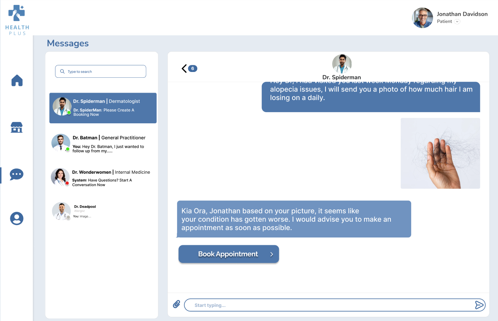
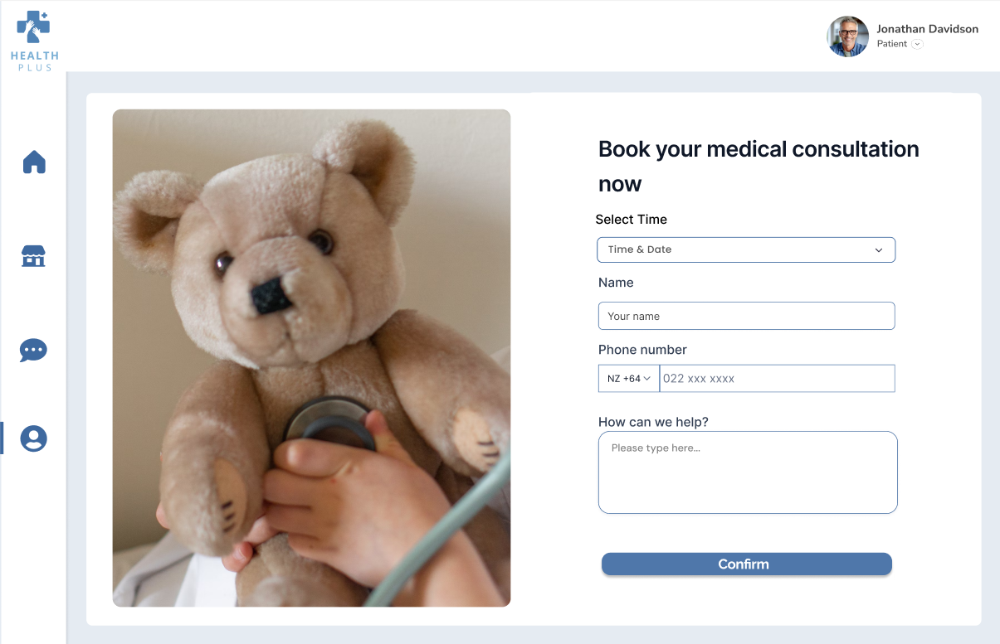

HealthPlus is an innovative health management platform designed to bridge the gap between patients and healthcare providers. With features like real-time communication, secure access to medical records, feedback management, and an integrated marketplace for health-related products, HealthPlus empowers patients to take control of their healthcare journey. The app has intuitive design ensures seamless navigation, while its robust functionality supports tasks like maintaining services, managing personal information, and purchasing essential products.
This project showcases my expertise in creating user-focused applications that solve real-world problems, highlighting skills in full-stack development, user experience design, and healthcare technology integration.